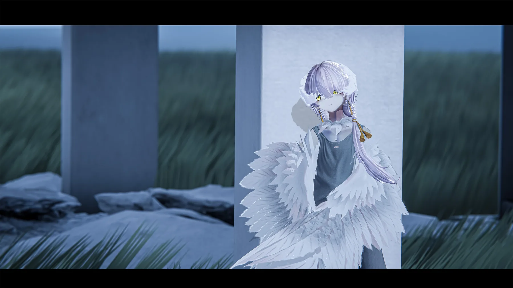
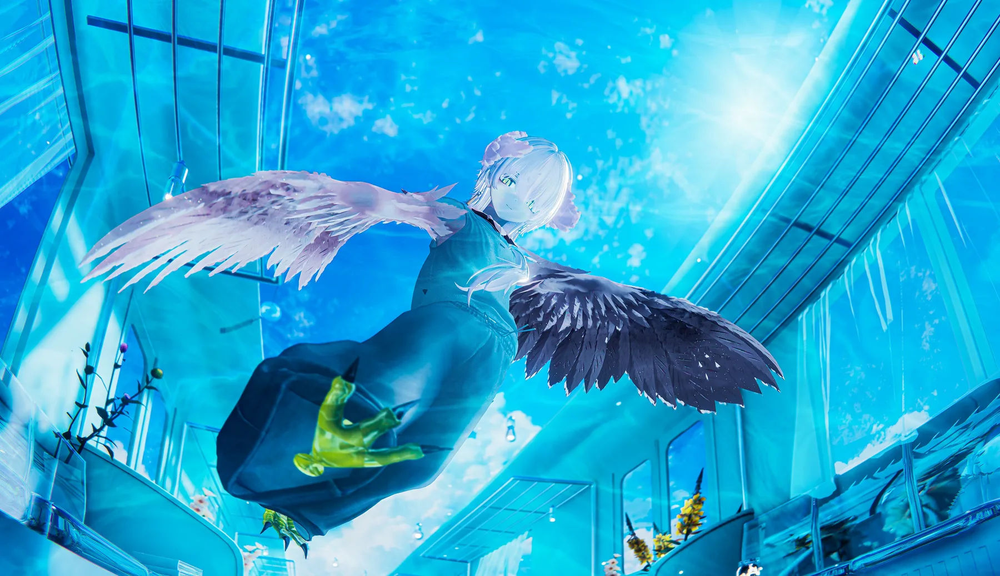
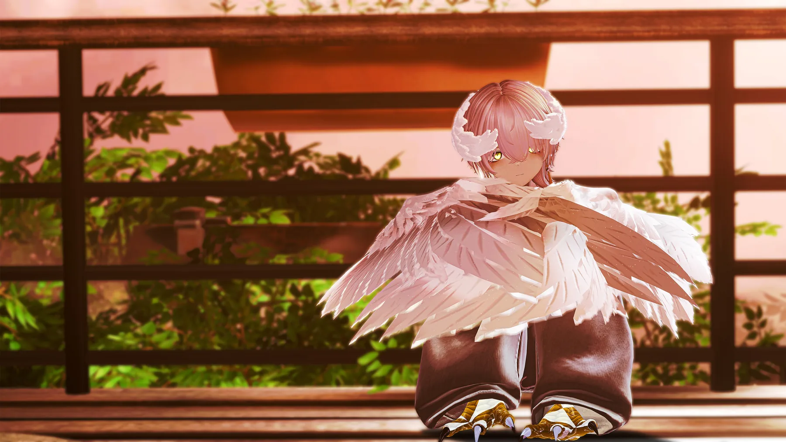
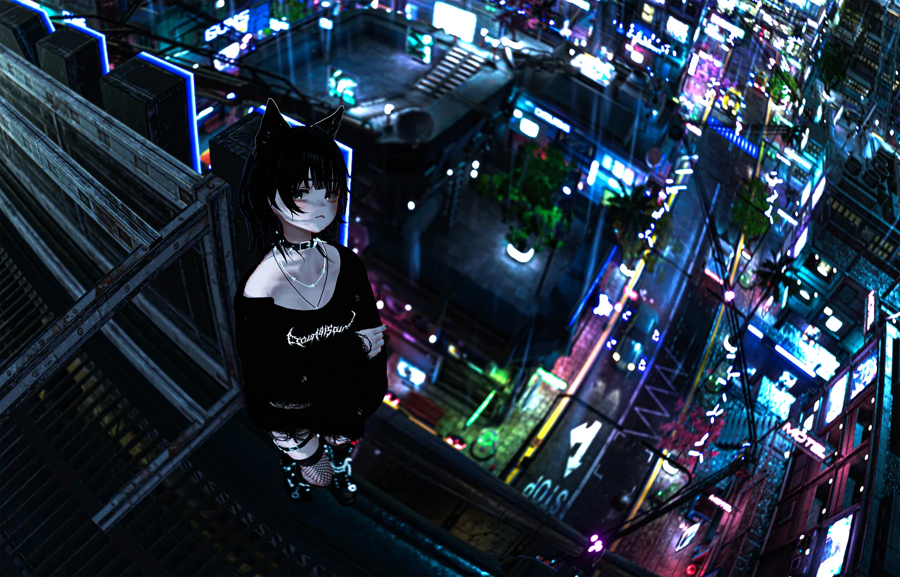
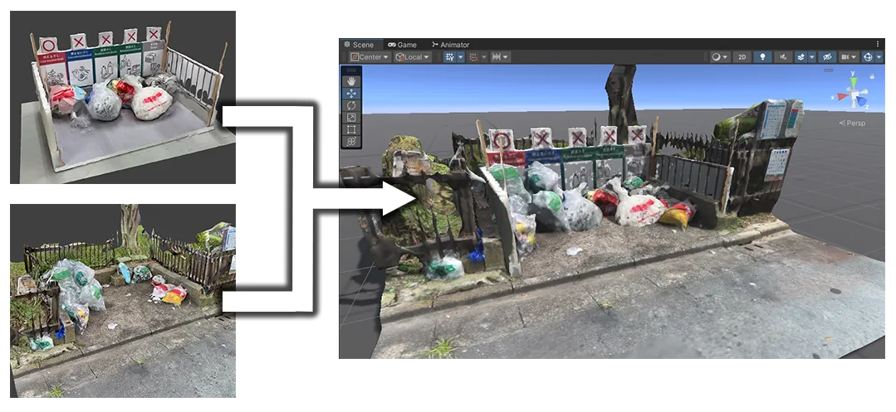
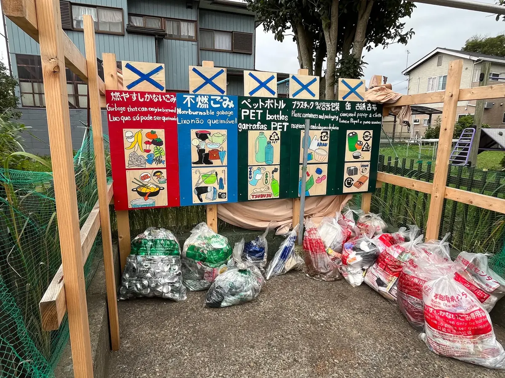

仮想空間での表現
2025年から、アバターを使った制作と撮影に取り組んでいます。異なる制作者の3Dアセットを組み合わせると、素材ごとに光の反射や質感が揃いません。Unityでマテリアルを調整し、実際の空間でどう見えるかを確かめながら整えています。
一枚にするまで
仮想カメラで構図や被写界深度を探り、空間とアバターが互いを引き立てる位置を選びます。撮影後はPhotoshopで光と色を調整。キャラクターだけを見せるのではなく、その場の空気まで感じられる画を目指しています。
3Dを、現実の場所のために
大学のアート・デザインプロデュース演習では、茨城県常総市の外国人移住者に向けた、ごみの分別を伝える可動看板の制作に参加しました。看板の模型と設置場所の3DデータをUnity上で重ね、設置前に大きさや見え方を確認。共同で実物の組み立てと設置まで進めました。
制作の記録




